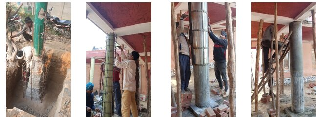

Our Projects
Gyan Srajan Infrastructure Projects Pvt. Ltd. has successfully undertaken projects in structural rehabilitation, infrastructure development and rainwater harvesting systems. Every project is executed with a commitment to quality, safety and timely completion while ensuring long-term durability and client satisfaction.
Featured Projects

|
Satya Bharti School Retrofitting – Jodhpur, RajasthanStructural retrofitting and rehabilitation works including strengthening of existing reinforced concrete members, repair works and overall structural improvement to enhance safety and service life. |
|
 |
Satya Bharti School Retrofitting – Shahjahanpur, Uttar PradeshExecution of rehabilitation and strengthening works with emphasis on structural integrity, quality workmanship and adherence to engineering standards. |

|
Rainwater Harvesting System – KharetaDesign and execution of a sustainable rainwater harvesting system aimed at groundwater recharge, water conservation and efficient utilization of natural resources. |

|
Rainwater Harvesting System – Sikandarpur MahmoodDevelopment of an integrated rainwater harvesting solution designed to improve water sustainability while complying with modern environmental engineering practices. |
Our Project Approach
- Detailed planning and engineering analysis.
- Strict quality assurance and quality control.
- Compliance with applicable standards and specifications.
- Efficient project execution and timely delivery.
- Commitment to safety and sustainable construction practices.
- Transparent communication with clients throughout the project lifecycle.